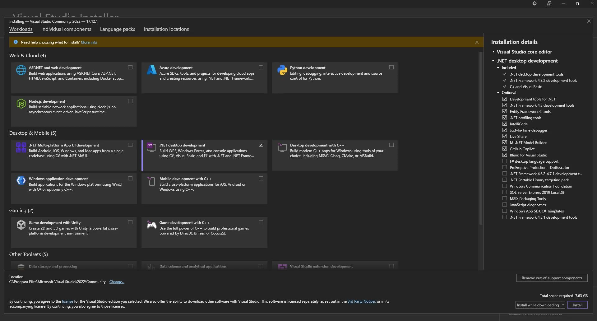

🖥️ C++ Application Development
Let’s build actual C++ desktop apps — from console programs to full GUI apps using Visual Studio or command-line tools. C++ is hardcore fast and battle-tested for everything from games to operating systems.
🔧 Tools You’ll Need
- Windows: Visual Studio Community Edition (free)
- Linux/macOS:
g++ compiler via terminal
- Optional: CMake for cross-platform builds
💡 Pro devs use Visual Studio for big apps, and g++ for lightweight command-line utilities.
📥 Install Visual Studio (Windows)

📝 Your First Console App (Windows + VS)
▶️ Building & Running
- In Visual Studio: Build → Build Solution (Ctrl+Shift+B)
- Run via Debug → Start Without Debugging (Ctrl+F5)
🖥️ Compile via Command Line (g++)
📦 Moving Into GUI Apps
- Use Windows Forms / Win32 API via Visual Studio
- Or external frameworks like:
🔐 Pro Tips
💡 Always separate your project into:
.h header files for declarations.cpp files for implementations- A main.cpp to launch your app